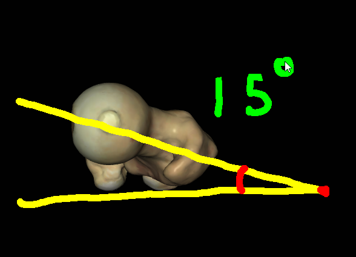

Lab 5 - Module 1 - Hip and Anterior Thigh - Osteology of the Hip and Thigh: Page 5 of 6
×

| Tap on image to enlarge |
| Close up of the right hip joint. |
Hip Angles of Inclination:
| Picture on the left indicates a normal angle of inclination (approx 135°) middle picture is an increased angle of inclination called Coxa Valga (> 135°) and the picture on the right is a decreases angle of inclination referred to as Coxa Vara (< 135°). |
How did the fracture change the angle of inclination? |
|
|
It decreased the angle of inclination. |
|
| Tap on image to enlarge |
Hip Torsion Angles:
| The torsion angle is measured by the axis of the femoral condyles with the axis of the head and neck of the femur. Normal torsion angle for the hip is 8-15° of anteversion. A decreased angle results in retroversion causing lateral rotation of the femur. An increased angle (meaning more than 15° of anteversion) is considered excessive anteversion and results in medial rotation of the femur. When someone is excessively anteverted or retroverted the rotation of the femur is necessary to allow the femoral head to articulate properly in the acetabulum. |
| Tap on image to enlarge |
| The femur is on the left is retroverted. The femur on the right is anteverted. Try to picture how the femur rotates in order to articulate properly. |
| Cephlad view of the right femur. |
What is the angle of torsion of this femur? |
|
|

|
|